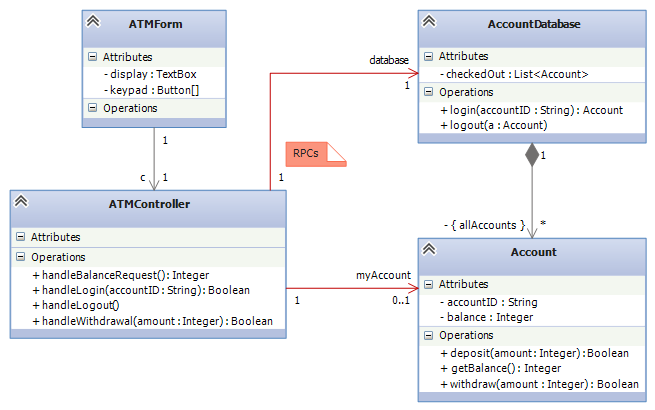
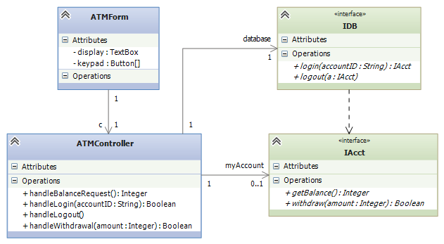
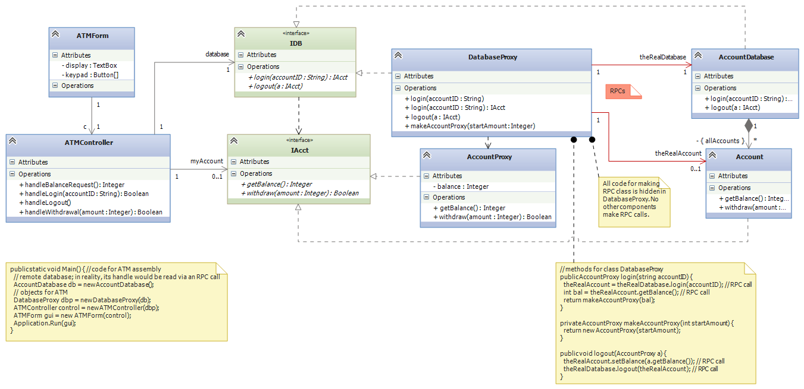
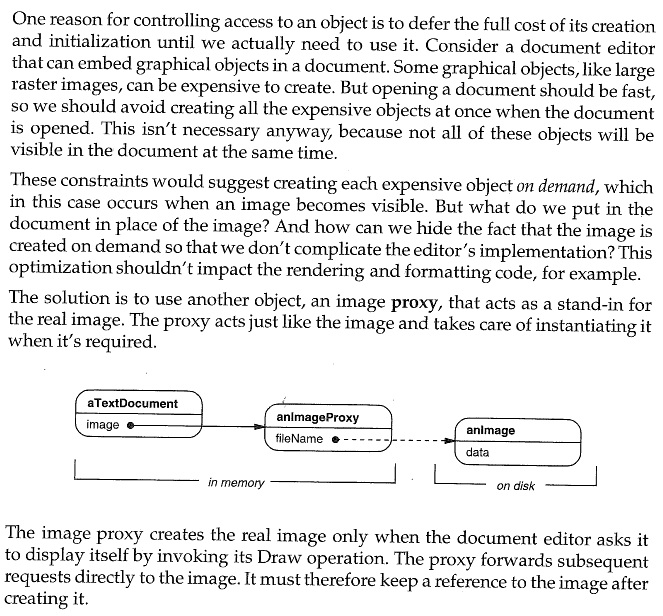
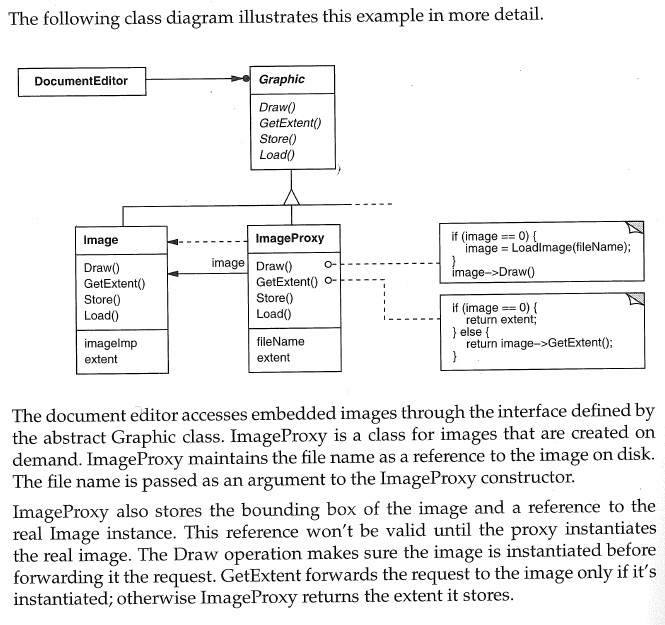

Course Notes — CIS 501: Software Architecture and Design, Fall 2014
A “proxy” is a “substitute” or a “stand-in” for the “real item”. Perhaps you have heard of “proxy voting”, where a person with a vote authorizes another person to vote in their place.
Computing systems use proxies, too.
A remote proxy is a local object, a copy, that looks and acts like the “real” object which is situated at a remote site. The remote proxy is used to minimize slow, long-distance communications. It is also used to hide the technical details of making the long-distance communications.
Consider a banking example, where an ATM and its controller must communicate with the bank’s database to login and do transactions on an account. Here is a super-simplistic architecture:
The class diagram does not show it, but the ATM is at one physical site and the database is at another site, far away. The sequence of actions goes like this:
This implementation generates too many remote procedure calls. It also fills the ATM’s controller with the complex coding for RPCs. It would be better if the ATM has no RPC code and contacts the database just once to “load the account into the ATM” and once to “unload and logout”. The ATM would work with a local copy of the account — its remote proxy.
To redesign the system, we first separate the ATM assembly from the database assembly, using interfaces. Here is the situation from the ATM’s perspective:
We now insert a remote proxy for the Account. The design will look like the ones used in the CORBA and DCOM (.NET) client-server architectures.
First, the ATM assembly “thinks” it is talking to the bank’s database and the account retrieved from the database. But the reality is different: Within each ATM assembly, we add a proxy object, DatabaseProxy, that stands for the remote database, and we add class AccountProxy that will be used to construct a proxy account object:
(Note: there might be a link from AccountProxy to Account, so that the Account can generate RPCs as needed to its “real” counterpart to do computation.) Again,
Here is how the system operates:
Again, the advantages of the remote proxy are
The Proxy Design Pattern shown here made possible business commerce on the internet: the “back end” is a collection of servers and databases that implement a set of standardized interfaces. The “front end” are client computers, situated at remote sites that use the interfaces. The proxies are installed with the clients and conduct commerce with the servers.
CORBA is the best known client-server architecture based on the proxy pattern, but DCOM (embedded in .NET) works this way, too. Enterprise Java Beans also uses proxies, but for client objects stored as proxies in the “back end” (server side).
Client-server systems implemented in Java sometimes use applets or servlets as proxy objects. A servlet is an applet (a Java-coded object that can be sent and run on any Java Virtual Machine) that is constructed by the client and sent by internet to the server, where the servlet acts as the clients’s remote proxy at the server’s site. This approach is useful for internet commerce: a web client can build a merchandise order within a servlet object and send the servlet to the vendor’s server, which communicates with the servlet to process and fulfill the order.
Sometimes it is too expensive to construct a complex object or an assembly of objects all at once, because the computation might use only a small part of the object/assembly, anyway. In this case, we construct only the parts we know will be used and insert “dummy values” — virtual proxies — for all the other parts. If the user/client calls on a virtual proxy, then the virtual proxy constructs the actual object that is needed. In this way, components are constructed and loaded only when it is certain they are needed. In general, a “virtual proxy” is any object that is “partially filled-in” and whose internal fields get “filled in” bit by bit as the proxy’s users/clients call the proxy’s methods and ask for data.
Here is an example where a virtual proxy is used: If you are like most people, you have thousands of email messages in your mail file. When you start your mail program, the mailer would take “almost forever” to load the thousands of email messages with attachments and build the massive header file that it shows you.
A modern mail program loads as your mail-file-object only the most recent messages and builds the headers for just them, since these are the messages that will likely be read by you. The mail-file-object holds virtual-proxy objects for the headers and messages of the older mails, which are not so likely to be read. If you want to read an old message, then your search for the old message contacts a virtual-proxy, which loads and constructs the older headers and mails. (Maybe you have noticed that sometimes your mail program “slows down” when you suddenly jump into a region of old emails – that’s why.)
Here is a second example: When you load a web page into a browser, the text loads immediately, but the images do not. As you scroll through the web page, the images that come into view get filled in. That is because the web page is a mix of HTML code for the text and Javascript code that act as virtual proxies for the images, finding and loading the images as they are needed (that is, when viewed on the web browser’s display).
Here is a nice explanation of the details of the above example, taken from the Design Patterns text by Gamma, et al. (Addison Wesley, 1995), reproduced under “fair use” laws:
 An access proxy is used when a system’s designer wants to limit the range of use of an actual object. The access proxy acts as an “imposter”, taking requests and refusing to do some of them, forwarding the others to the real object.
The standard example of access proxy is the HTTP proxy used by a coffee shop to limit the web activities of its customers. That is, when a coffee-shop customer uses the shop’s internet to load a web page with an HTTP address, the request goes first to the access proxy, which checks if the request is allowable. (Maybe MMO games, streaming, and gambling sites are not allowed at the coffee shop.) An allowable request is forwarded to the shop’s HTTP server, which does the request and returns the web page to the customer.
Proxies are an important design tool in modern systems:
This note was adapted from David Schmidt's CIS 501, Spring 2014, Lecture 12 course note. © Copyright 2014, David Schmidt.